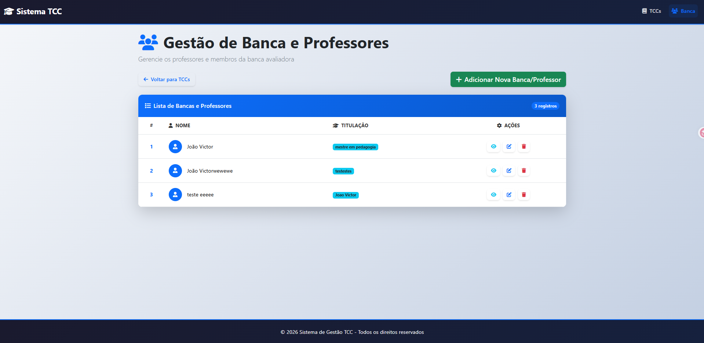
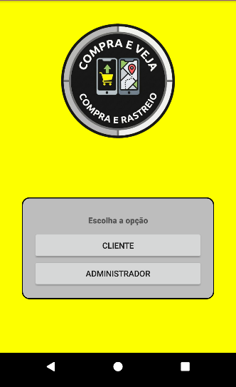
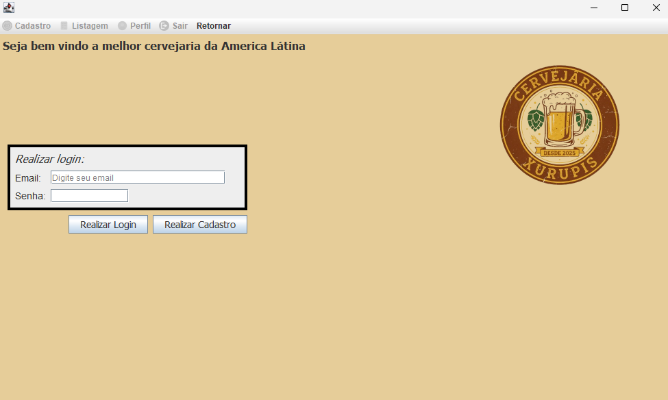

Prazer, eu sou
|
Desenvolvedor Backend em busca de oportunidades
Graduando em Análise e Desenvolvimento de Sistemas com foco em desenvolvimento backend. Estou sempre em busca de novas oportunidades para aplicar meu conhecimento em Java, PHP e desenvolvimento de sistemas robustos.
Stacks
Tecnologias e ferramentas que utilizo
Frontend
Backend & Banco de Dados
Ferramentas
Formação Acadêmica
Minha trajetória acadêmica e cursos
Análise e Desenvolvimento de Sistemas
IFFar - Campus São Vicente do Sul (RS)
Curso tecnológico com foco em desenvolvimento de software, estruturas de dados, banco de dados e engenharia de software. (5º semestre em progresso)
Cursos realizados
Especialização/formação em Minicurso de Java – Faculdade de Tecnologia Rocketseat (2025) CCNA: Introduction to Networks – Instituto Federal Farroupilha (2025) DevOps & Agile Culture – FIAP - Centro Universitário (2026)Aprimoramento contínuo através de cursos especializados em desenvolvimento backend com Java, infraestrutura de redes CCNA e metodologias DevOps com práticas ágeis. Combinando conhecimento técnico com gestão moderna de projetos.
Ensino Médio
Instituto Estadual de Educação Professora Guilhermina Javorski
Ensino médio completo.
Projetos
Uma seleção dos meus trabalhos mais recentes

Repositório de Trabalho de Conclusão de Curso
Sistema web desenvolvido em Laravel para gerenciamento e repositório de TCCs, permitindo o cadastro de membros de banca e trabalhos acadêmicos.

Compra e Veja
Aplicativo mobile Android para cadastro e rastreamento de pedidos/encomendas. Permite ao usuário registrar compras, acompanhar o status de entrega e visualizar o histórico completo de movimentações, tudo integrado a um servidor remoto via Web Services em PHP.

Sistema de Gerenciamento de Degustações
O projeto é uma aplicação desktop desenvolvida em Java para a disciplina de Programação III, focada no gerenciamento de experiências sensoriais de entusiastas de cerveja. O sistema permite que usuários cadastrados criem um histórico detalhado de degustações, unindo informações técnicas da bebida com avaliações pessoais.
Contatos
Entre em contato para futuros negócios
Pronto para colaborar!
Estou disponível para projetos freelancer e oportunidades de emprego. Entre em contato!